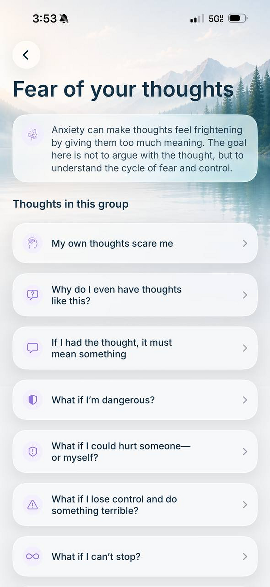
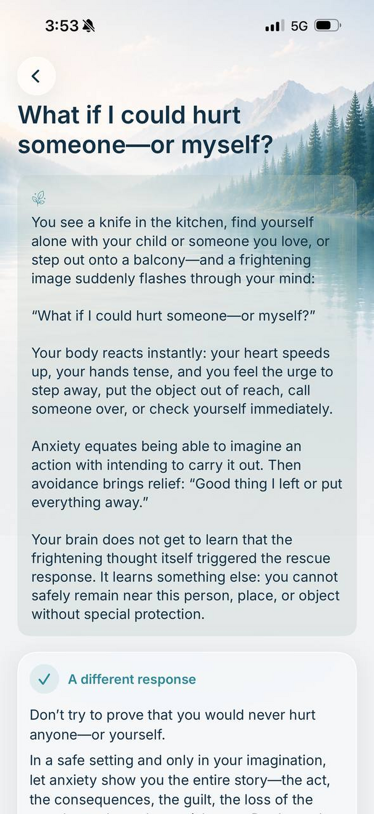

Intrusive Thoughts: Why They Feel So Frightening—and Why They Keep Coming Back
An intrusive thought can appear without warning—as a phrase, an image, a doubt, or a brief unwanted urge.
“What if I could hurt someone?”
“Why would I even think something like that?”
“What if I lose control?”
These thoughts can feel especially disturbing when they go against what matters most to you. Anxiety may then suggest that being able to imagine something must reveal who you are.
But having a thought and accepting anxiety’s interpretation of it are not the same thing. It can be more useful to notice what follows: checking, analyzing, avoiding, or searching for complete certainty.
The short answer
Unwanted thoughts are a common human experience. They can feel upsetting, strange, or completely out of character. International research has found them in people without a clinical diagnosis as well.
A thought often becomes “sticky” when it is treated as a warning that requires an immediate answer: Why did it appear? What does it mean? Can I guarantee that nothing bad will happen? Checking may bring brief relief, but another doubt soon restarts the search.

What frightening thoughts can sound like
The content can vary widely: harm, loss of control, illness, responsibility, heights, driving, relationships, identity, or memory. Some people experience unwanted sexual, religious, offensive, or other taboo thoughts that conflict with their values.
One frightening thought cannot determine someone’s character, intentions, or diagnosis. What matters is the larger context: how the person relates to it, how much it disrupts daily life, and what they do to reduce the anxiety.
Why anxiety often targets what matters most
Frightening thoughts often touch what a person values deeply: loved ones, decency, relationships, faith, or responsibility. That can make a thought feel unusually meaningful.
This does not mean it reveals a hidden wish. The mind quickly notices anything connected to losing something important. The harder someone works to guarantee safety or moral certainty, the more attention the doubt may receive.
One person checks whether they might have caused harm. Another analyzes whether they truly love their partner. The themes differ, but the search for an impossible guarantee can follow the same pattern.
An intrusive thought does not automatically mean OCD
An isolated unwanted thought does not, by itself, mean someone has obsessive-compulsive disorder. A professional assessment considers frequency, distress, time consumed, interference with daily life, and repetitive behaviors or mental rituals.
Those rituals are not always visible. A person may replay an event, check their feelings, repeat phrases internally, compare themselves with others, or try to prove the thought means nothing.
How the anxiety cycle develops
The cycle may look like this:
- 01An unwanted thought, image, or doubt appears.
- 02Anxiety gives it a threatening meaning: “If I thought it, something must be wrong with me.”
- 03Fear, guilt, shame, or tension follows.
- 04The person begins checking, analyzing, avoiding, or asking others for reassurance.
- 05The response brings temporary relief.
- 06The brain may learn that the thought required a special response.
When a similar thought returns, it captures attention faster. It may seem stronger or more believable, while the habit of noticing and controlling it may be what has grown.
How anxiety turns a thought into a threat
Possibility gets confused with intention
The mind can imagine an enormous range of events, including unwanted ones. Anxiety may turn that ability into a frightening suspicion: “What if I actually want this?” An imagined possibility begins to feel like evidence, although the thought alone cannot support that conclusion.
A strong feeling gets treated like a fact
A frightening thought may trigger a racing heart, tension, unreality, or sudden fear. The mind then concludes: “If I feel this afraid, the danger must be real.” But intense anxiety shows how important the brain considers the situation; it does not confirm anxiety’s explanation.
Anxiety demands complete certainty
The mind may demand a final answer: “Prove this could never happen,” or “Make sure you are not that kind of person.” Absolute certainty is difficult to obtain, so one answer is quickly replaced by another question.

What can keep the thought coming back
Repeated analysis
A person may keep checking what they felt, why the thought appeared, and what it says about them. A few more minutes of analysis promises clarity, but keeps attention fixed on the doubt.
Reassurance seeking
Someone may repeatedly ask loved ones, read articles, compare symptoms, or return to the same question online. Support matters, but repeatedly searching for one final answer can become another check.
Avoidance
A person may avoid places, objects, people, or ordinary activities associated with the thought. Relief is understandable, but the brain may learn that escape or special protection was necessary.
Trying to push the thought away
To make sure a thought is gone, a person must keep checking whether it returned. Attention remains focused on the very thought they are trying not to have, sometimes making it more noticeable.
What may help change the pattern
First, notice the difference between the thought and anxiety’s conclusion: “A frightening thought showed up, and my mind wants to explain it immediately.”
Next, notice what anxiety is asking for. Another check of your memory, feelings, or body? Reassurance, avoidance, or an urgent explanation?
One possible next step is to pause before adding another check. You might return to what you were doing, end the analysis, or avoid repeating the same question. The goal is not immediate calm, but fewer actions that make the thought the center of your day.
This does not mean ignoring genuine danger. It refers to familiar situations where anxiety asks for more control without new objective information. If the distress is intense, consider working with a qualified professional rather than designing difficult exercises on your own.
How to recognize progress
Progress does not require unwanted thoughts to disappear. It may mean less time analyzing, fewer repeated questions and checks, less avoidance, and an easier return to everyday activities. A thought can still cause anxiety without controlling the entire day.
When to talk with a professional
Consider seeking help if the thoughts consume significant time, interfere with work, school, sleep, or relationships, lead to persistent rituals and avoidance, or cause overwhelming shame or hopelessness.
Evidence-based approaches are available for OCD, including cognitive behavioral therapy with exposure and response prevention, or ERP. In some situations, a physician may also discuss medication. Diagnosis and treatment decisions should be made by qualified professionals.
If a frightening thought is accompanied by an actual desire to act, a specific plan, or an inability to keep yourself or someone else safe, seek immediate help. In the United States, call or text 988. If there is immediate danger, call 911. Outside the United States, contact the appropriate local crisis or emergency service.
How Ailin can support you
Ailin does not diagnose mental health conditions or replace therapy or medical care. It uses calm, everyday language to show how a thought can become connected with anxiety, checking, reassurance seeking, and avoidance.
Ailin includes explanations for many familiar frightening thoughts—from losing control to “What if I’m dangerous?” or “What if I could hurt someone?” Choose the situation closest to your experience, read a short explanation, or go deeper when ready.
The cards also show what often follows: trying to become certain, stepping away, checking again, or searching for a guarantee. This can make the repeating pattern easier to recognize.
Audio support is available when reading feels difficult. Ailin’s purpose is not to offer another promise of complete certainty, but to help you understand the pattern and take one manageable next step.
Frequently asked questions
Does a frightening thought mean I want to act on it?
One automatic thought does not establish desire or intention by itself. Context, the person’s relationship to the thought, and actual behavior all matter. If you are unsure about your safety or someone else’s, seek professional help right away.
Why does the thought return when I do not want it?
Anxiety can make you monitor for the thought’s return. Checking, analyzing, and trying to eliminate it may keep attention focused on the same subject.
How can I tell whether I have OCD?
OCD cannot be identified from one thought alone. Frequency, distress, interference with life, repetitive behavior, and mental rituals all matter. Only a qualified professional can diagnose it.
Should I tell a professional what the thought is about?
Professionals familiar with OCD regularly work with thoughts that cause shame. Describing the thought and what follows can help them understand the cycle. If one provider responds without understanding, look for someone experienced in OCD and ERP.
Sources
- National Institute of Mental Health — Obsessive-Compulsive Disorder: When Unwanted Thoughts or Repetitive Behaviors Take Over
- NICE — Obsessive-compulsive disorder and body dysmorphic disorder: treatment
- Royal College of Psychiatrists — Obsessive-compulsive disorder
- Radomsky et al. — Intrusive thoughts on six continents
- The cross-cultural and transdiagnostic nature of unwanted mental intrusions
- International OCD Foundation — About OCD
- International OCD Foundation — Exposure and Response Prevention
This material is for educational purposes only and is not a substitute for diagnosis, psychotherapy, or medical care.